This post is the study note of `Head First Design Patterns`. In this post, many design patterns will be introduced briefly. To know more details of each design pattern, you can check other posts. And I also created a repository on Github including almost all the examples in this book `git repository`.
1. Strategy Pattern
Definition:
It defines a family of algorithms, encapsulates each one, and makes them interchangeable. Strategy lets the algorithm vary independently from clients that use it.
The class diagram:
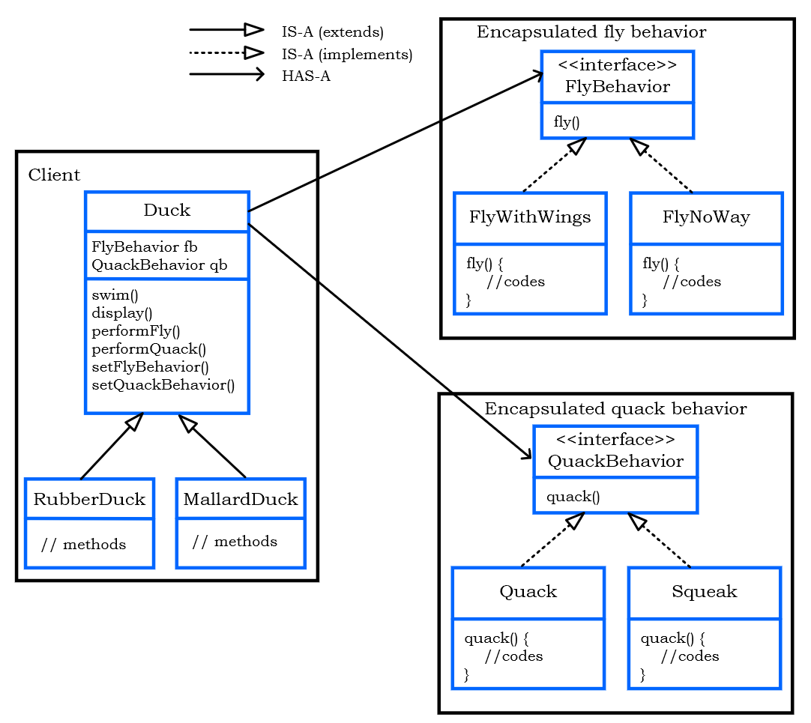Tips:
We can see the strategy pattern is flexible, since it uses object composition. With strategy pattern, clients can change their algorithms at runtime simply by using a different strategy object.
2. Observer Pattern
Definition:
It defines a ONE-to-MANY dependency between objects so that when one object changes state, all of its dependents are notified and updated automatically.
The class diagram:
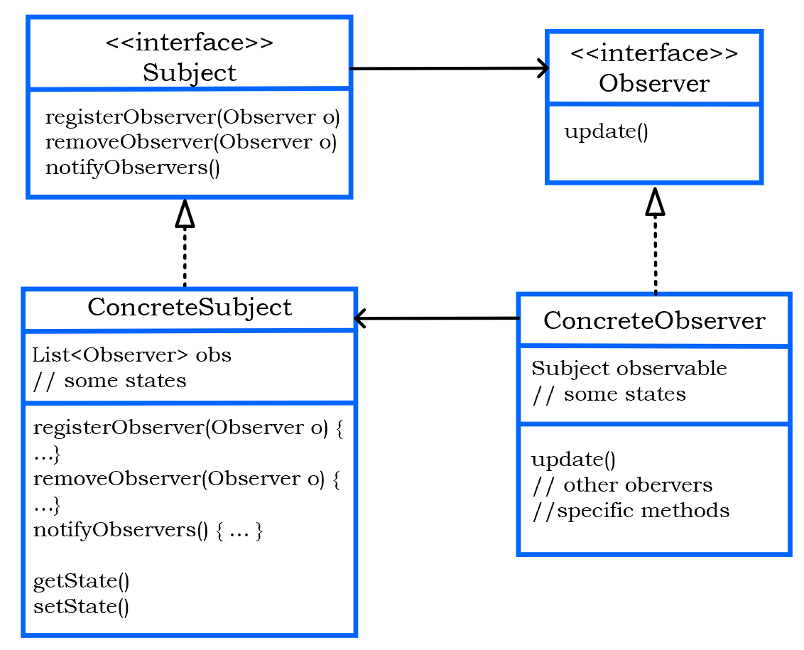Tips:
- Objects use the subject interface to register as a object and also to remove themselves from being observers.
- Each subject can have MANY observers.
- Each observer registers with a concrete subject to receive updates.
- Observer pattern makes subject and observers LOOSELY COUPLED.
- The only thing the subject knows about an observer is it implements a certain interface.
- A new observer can be added at any time.
- There is no need to modify a subject when adding a new type observer.
- Subjects and observers can be reused, since they are indepent of each other.
3. Decorator Pattern
Definition:
It attaches additional responsibilities to an object dynamically. Decorators provide a flexible alternative to subclassing for extending functionality.
The class diagram:
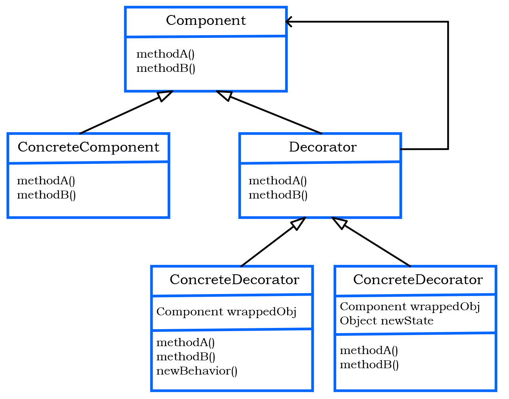Tips:
- Each component can be used on its own or wrapped by a decorator.
- Each decorator HAS-A component, which means it has a instance variable that holds the reference to a component.
4. Factory Method Pattern
Definition:
It defines an interface for creating an object but lets subclasses decide which class to instantiate. Factory Method lets a class defer instantiation to subclasses.
The class diagram:
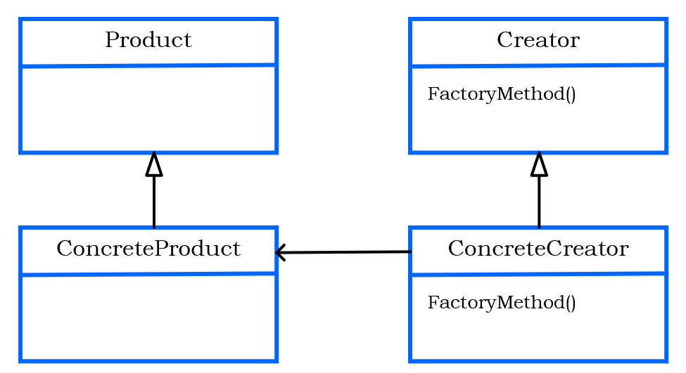Tips:
- Factory Method gives us a way to encapsulate the instantiations of concrete types.
- Decide, not because the pattern allows subclasses themselves to decide at runtime, but because the creator class is written without knowledge of the actural products that will be created, which is decide purely by the choice of the subclass that is used.
- The abstract factoryMethod() is what all creator subclasses must implement.
- The Concreator implements the factoryMethod(), and it is the only class that has the knowledge of how to create these products.
- Reflect Dependency Inversion Principle, that is “Depend on abstractions. Do not depend on concrete classes”
5. Abstract Factory Pattern
Definition:
It provides an interface for creating families fo related or dependent objects without specifying their concrete class.
The class diagram:
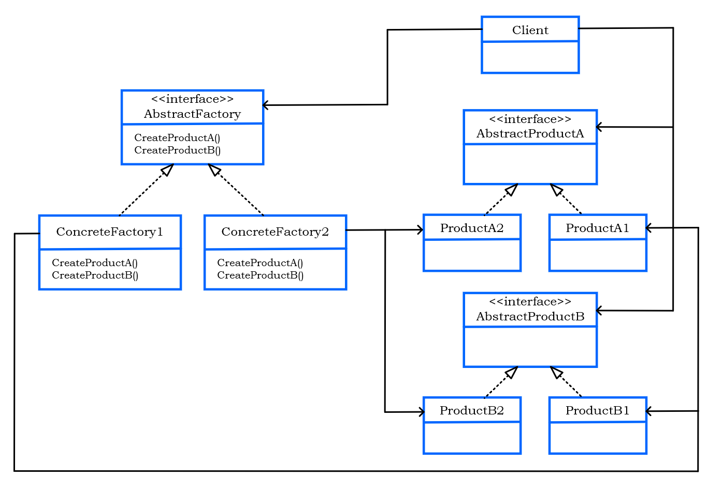Tips:
- An abstract factory gives us an interface for creating a family of products without knowing about the concrete products that are acturally producted. In this way, the client is decoupled from any of the specifices of the concrete products.
- The Client is written against the abstract factory and then composed at runtime with an actual factory.
- The concrete factories implement the different product families. To create a product, the client uses one of these factories, so it never has to instantiate a product object.
6. Singleton Pattern
Definition:
It ensures a class has only one instance, and provides a global point of access to it.
The class diagram:
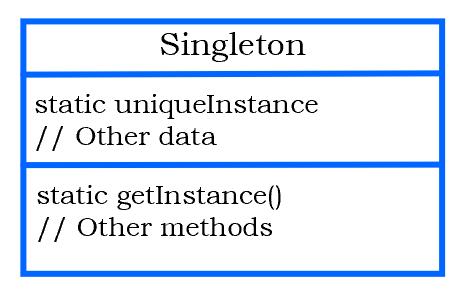Tips:
- We are preventing any other class from creating a new instance on tis own. To get an instance, you’ve got to go through the class itself.
- We can create the Singleton in a lazy manner, which is especially important for resource intensive objects.
7. Command Pattern
Definition:
It encapsulates a request as an object, thereby letting you parameterize other objects with different requests, queue or log requests, and support undoable operations.
Command Object:
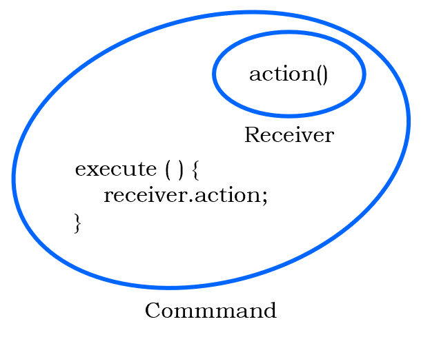
The class diagram:
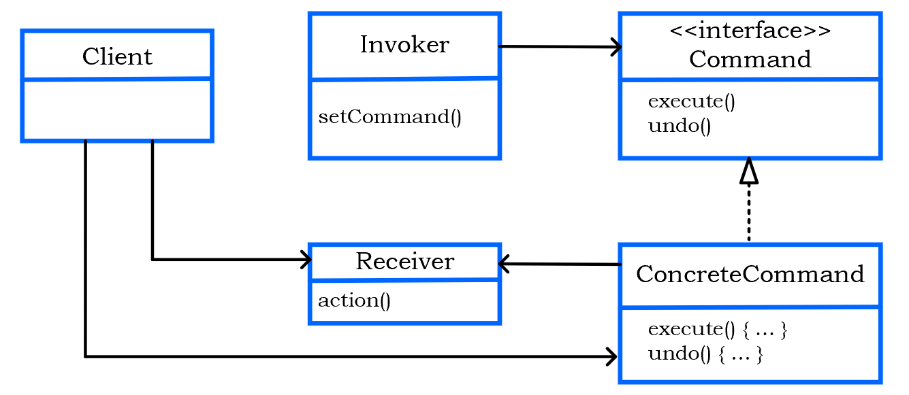Tips:
- It allows us to decouple the requester of an action from the object that actually performs the action. So the requester would be the remote control and the objcet that performs the action would be an instatnce of one of vendor classes. And the requester now doesn’t need to know how to perform the action.
- A command object encapsutes a request by binding together a set of actions on a specific receiver. To achieve this, it packages the actions and the receiver up to an object which exposes just one method,
execute(). - The Client is responsible for creating a ConcreteCommand and setting its Receiver.
- The Invoker holds a command and at some point asks the command to carry out a request by calling its
execute()method. It can be parameterized with Commands, even dynamically at runtime. - The ConcreteCommand defines a binding between an action and a Receiver. The Invoker makes a request by calling
execute()and the ConcreteCommand carries it out by calling one or more actions on the Receiver. - The Receiver knows how to perform the work needed to carry out the request. Any class can act as a Receiver.
7. Adapter Pattern
Definition:
It converts the interface of a class into another interface the client expects. Adapter lets classes work together that couldn’t otherwise because of incompatible interfaces.
The class diagram:
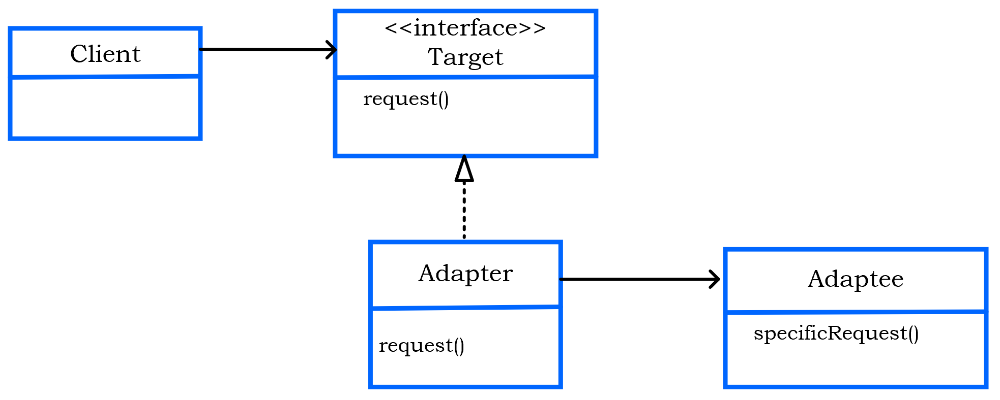Tips:
- The Adapter implements the Target interface, and it also is composed with the Adaptee.
8. Facade Pattern
Definition:
It provides a unified interface to a set of interfaces in a subsystem. Facade defines a higher-level interface that makes the subsystem easier to use.
The class diagram:
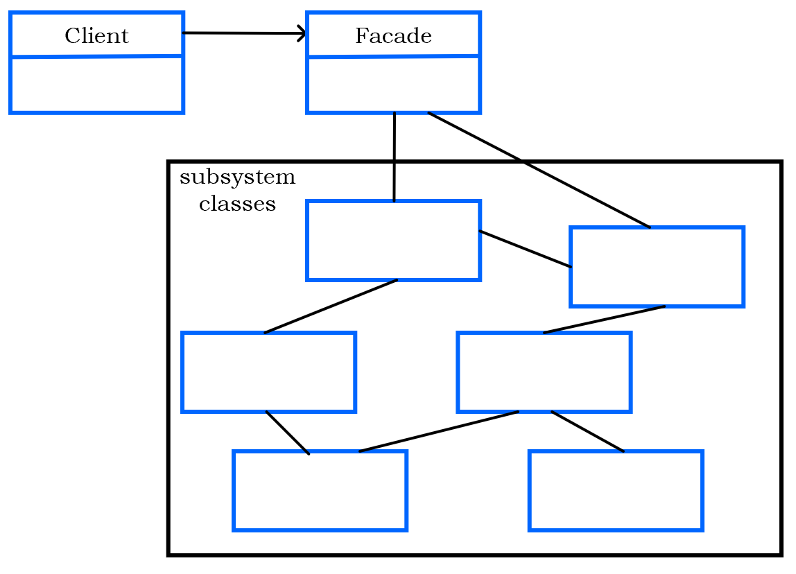Tips:
- Facades and adapters may wrap multiple classes, but a facade’s intent is to simplfy, while an adapter’s is to convert the interface to something different.
- Client’s job becomes easier because of the facade.
9. Template Pattern
Definition:
It defines the skeleton of an algorithm in a method, deferring some steps to subclasses. Template Method lets subclasses redefine certain steps of an algorithm without changing the algorithm’s structure.
The class diagram:
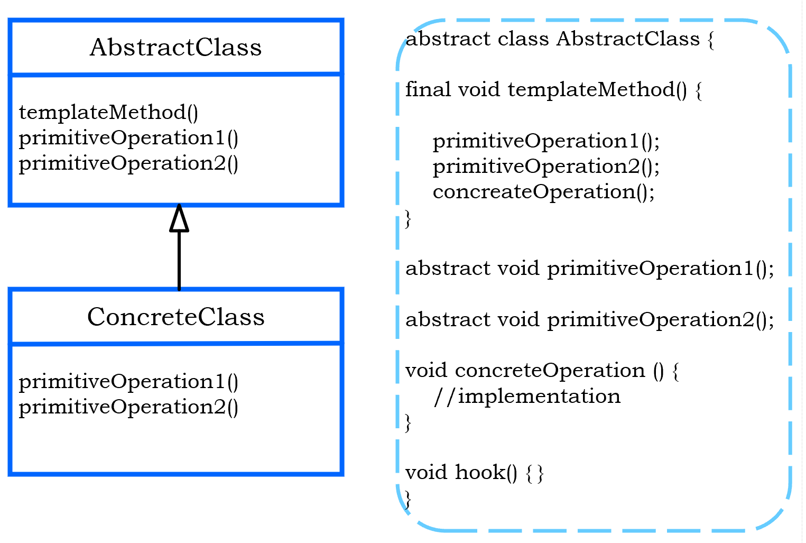Tips:
- What’s a template? It is just a method; it’s a method that defines an algorithm as a set of steps.
- One or more these steps is defined to be abstract and implemented by a subclass. This ensures the algorithm’s structure stays unchanged, while subclasses provide some part of the implementation.
- A hook is a method that is defined in the abstract class, but only given an empty or default implementation. This gives subclasses the ability to “hook into” the algorithm at various points, if they wish; a subclass is also free to ignore the hook.
- Difference with strategy pattern: Strategy pattern uses object composition. In strategy, the class we compose with implements the entire algorithm.
10. Iterator Pattern
Definition:
It provides a way to access the elements of an aggregate object sequentially without exposing its underlying representation.
The class diagram:
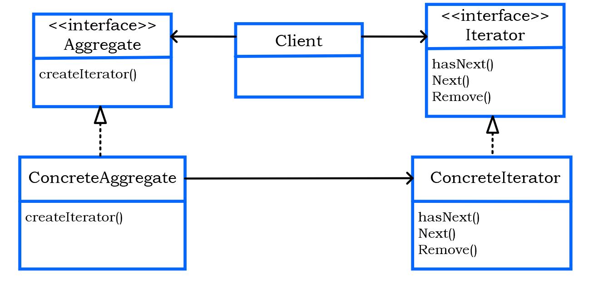Tips:
- It allows uniformly access the elementss of aggregate objects without exposing the underlying implementation.
- It places the task of traversal on the iterator object, not on the aggregate which simplifies the aggregate interface and implementation, and places the responsibility where it should be.
- It refelcts Single Responsibility Principle.
Hashtableis one of a few classes that indirectly supports Iterator. We can get the iterator of its values, i.e.ht.values().iterator().
11. Composite Pattern
Definition:
It allows us to compose objects into tree structures to represent part-whole hierarchies. Composite lets clients treat indeividual objects and compositions of objects uniformly.
Tree Structure:
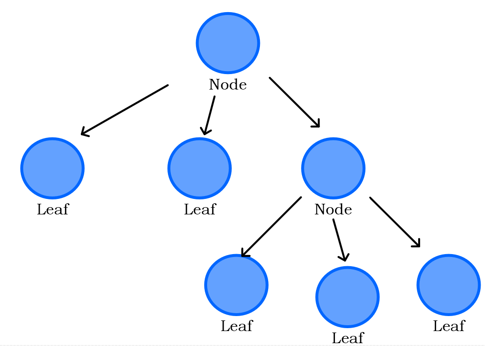
The class diagram:
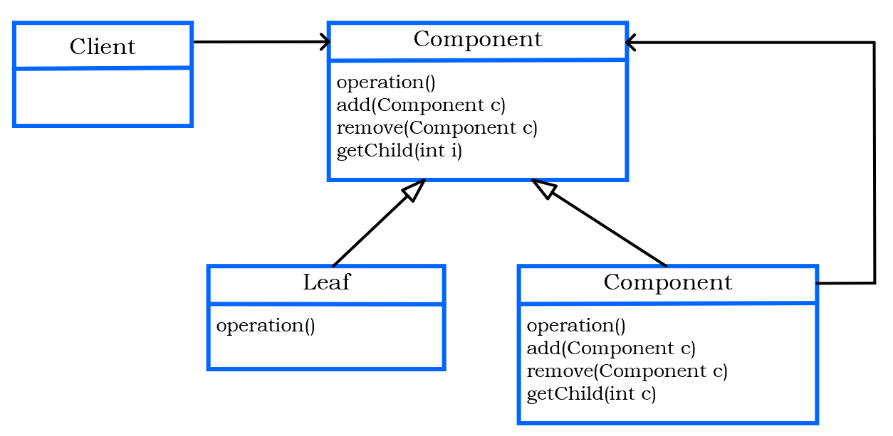Tips:
- A composite contains components. Components come in two flavors: composite and leaf elements.
- All leaf objects and composite objects must extend the component abstraction. Because leaves and nodes have different roles we can’t always define a default implementation for each method that makes sense. Sometimes the the best we can do is throw a runtime exception. For example,
public void add(Component component) {
throw new UnsupportedOperationException();
}- How to implement a composite iterator?
public class CompositeIterator implements Iterator {
Deque<Iterator> stack = new ArrayDeque<>();
public CompositeIterator (Iterator iterator) {
stack.push(iterator);
}
public Object next() {
if (hasNext()) {
Iterator iterator = (Iterator) this.stack.peek();
Component component = (Component) iterator.next();
if (component instanceof Composite)
stack.push(component);
return component;
} else {
return null;
}
}
public boolean hasNext() {
if (this.stack.isEmpty()) return false;
Iterator iterator = this.stack.peek();
if (iterator.hasNext()) {
return true;
} else {
this.stack.pop();
return hasNext();
}
}
}12. State Pattern
Definition:
It allows an object to alter its behavior when its internal state changes. The object will appear to change its class.
The class diagram:
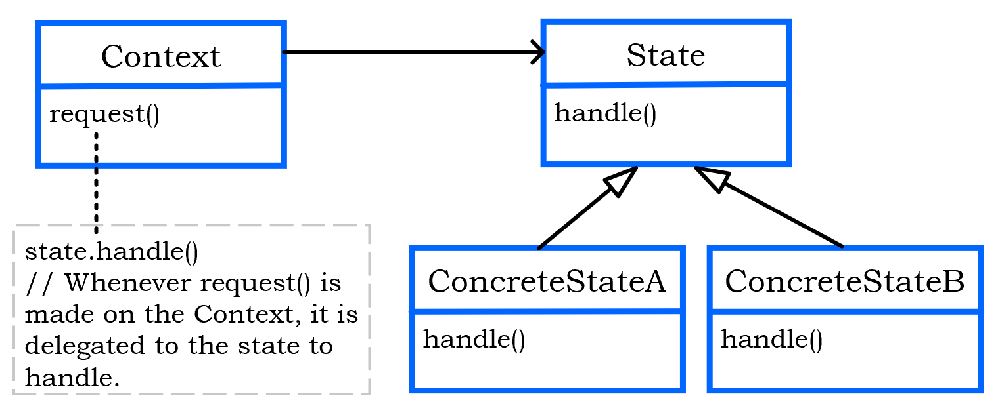Tips:
- It encapsulates state into separate classes and delegates the object representing the current state, so the behavior changes along wit the internal state.
- How to understant “appear to change its class?” We can think about it from the perspective of a client: if an object we’re using can completely change its behavior, then it appears to us that the object is actually instantiated from another class. In reality, we are using composition to give the appearance of a class change by simply referencing different state objects.
- What’s the difference between Stategy Pattern and State Pattern? Their class diagrams are essentially the same, but two patterns differ in their intent.
- With the State Pattern, we have a set of behaviors encapsulated in state objects; at any time the context is delegating to one of those states. Over time, the current state changes across the set of state objects to reflect the internal state of the context, so the context’s behavior changes over time as well. The client usually knows very little about the state objects.
- With Strategy, the client usually specifies the strategy object that the context is composed with. While the pattern provides the flexibility to change the stategy object at runtime, often there is a strategy object that is most appropriate for a context object.
- In general, think of the Strategy Pattern as a flexible alternative to subclassing; if we use inheritance to define the behavior of class, then we’re stuch with that behavior even if we need to change it. With Stragety, we can change the behavior by composing with a different object.
- Think of the State Pattern as an alternative to putting lots of conditionals in our context; by encapsulting the behaviors within state objects, we can simply change the state object in context to change its behavior.
13. Proxy Pattern
Definition:
It provides a surrogate or placeholder for another object to control access to it. It creates a representative object that controls access to another object, which may be remote, expensive to create or in need of securing.
The class diagram:

Tips:
- Both the Proxy and the RealSubject implement the Subject interface. This allows any client to treat the proxy just like the RealSubject.
- The Proxy keeps a reference to the Subject, so it can forward requests to the Subject when necessary.
- The Proxy often instantiates or handles the creation of the RealSubject.
- The RealSubject is usually the object that does most of the real work; the Proxy controls access to it.
Three types of Proxies:
Remote Proxy:
With Remote Proxy, the proxy acts as a local representative for an object that lives in a different JVM. A method call on the proxy results in the call being transferred over the wire, invoked remotely, and the result being returned back to the proxy and then to the Client.
Virtual Proxy:
Virtual Proxy acts as a representative for an object that may be expensive to create. The Virtual Proxy ofter defers the creation of the object until it is needed; the Virtual Proxy also acts as a surrogate for the object before and while it is being created. After that, the proxy deletages requests directly to the RealSubject.
Protection Proxy (Dynamic Proxy):
To create these proxies, we can use the Java API’s dynamic proxy (in the package java.lang.reflect). Java creates the Proxy class for us, we need a way to tell the Proxy class what to do. We can’t put code in the Proxy class, where do we put it? In an InvocationHandler. The InvocationHandler is to respond to any method calls on the proxy.
- The
Proxyis generated by Java and implements the entireSubjectinterface. For example,
PersonBean getOwnerProxy(PersonBean person) {
return (PersonBean) Proxy.newProxyInstance(
person.getClass().getClassLoader(),
person.getClass().getInterfaces(),
new OwnerInvocationHandler(person)
);
}- We supply the
InvocationHandler, which gets passed all method calls that invoked on theProxy. TheInvocationHandlercontrols access to the methods of theRealSubject. For example,
public class OwnerInvocationHandler implements InvocationHandler {
PersonBean person;
/*
* Pass the real subject in the constructor and we keep a reference to it.
* */
public OwnerInvocationHandler(PersonBean person) {
this.person = person;
}
/*
* invoke method: gets called every time a method is invoked on the proxy
*
* */
@Override
public Object invoke(Object proxy, Method method, Object[] args) throws IllegalAccessException {
try {
if (method.getName().startsWith("get")) { // if method is a getter, we go ahead and invoke it on the real subject
return method.invoke(person, args);
} else if (method.getName().equals("setHotOrNotRating")) { // we disallow it by throwing a IllegalAccessException
throw new IllegalAccessException();
} else if (method.getName().startsWith("set")) {
return method.invoke(person, args);
}
} catch (InvocationTargetException e) {
e.printStackTrace();
}
return null;
}
}